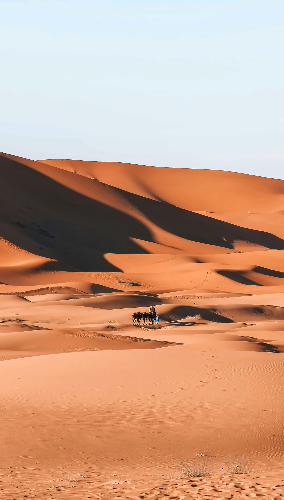
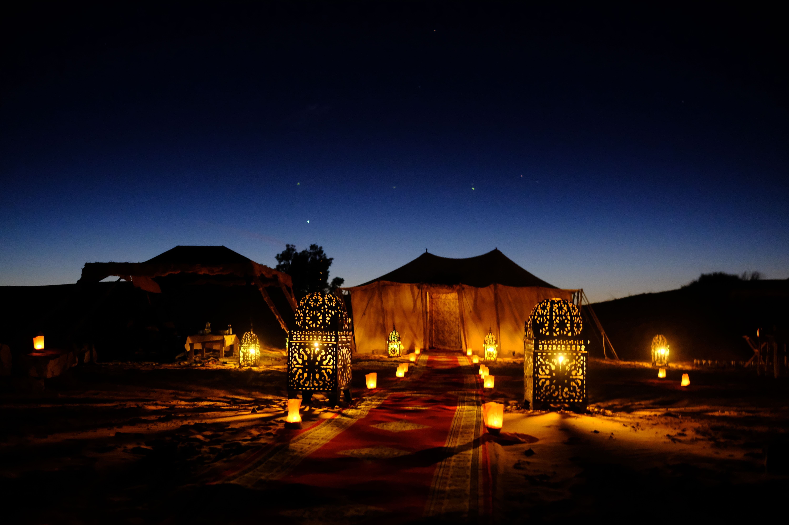
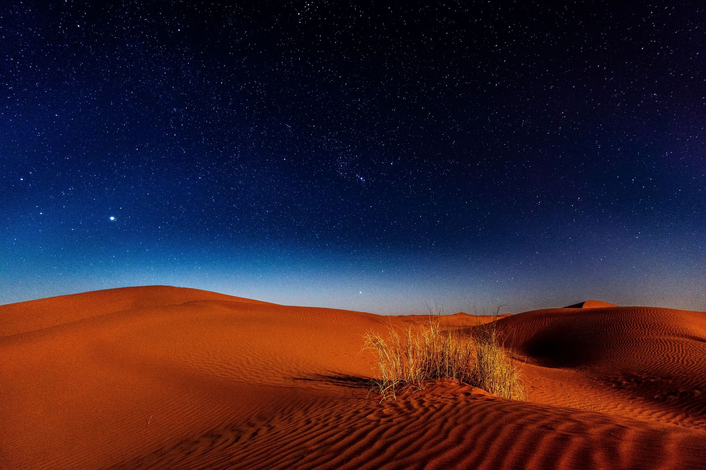
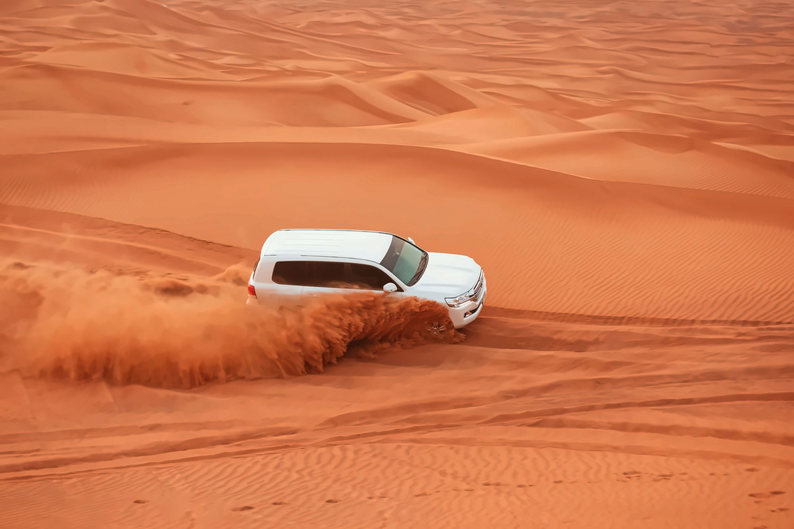

Erg Chebbi, camel treks and a night under Sahara stars
Everything we have learned from running Merzouga desert tours ourselves, from choosing a camp to picking the right season.
We've been guiding travelers into the Erg Chebbi dunes for years, and there's a moment that gets every single one of them: the instant the engine of the 4x4 falls silent, the dust settles, and the Sahara stretches out in front of you like nothing else on earth. Merzouga isn't just a stop on a Morocco itinerary; for many of our guests it becomes the moment they remember the whole trip by. In this guide, we're sharing everything we've learned from running Merzouga desert tours firsthand, so you can plan a trip that actually matches the dream you had in your head when you first searched for a Sahara desert tour.
Erg Chebbi is what most people picture when they imagine the Sahara: dunes that climb up to 150 meters, their ridgelines shifting color from pale gold to deep amber as the sun moves across the sky. Walking barefoot up a dune here, feeling the sand cool underfoot in the early morning and almost too hot to touch by midday, is part of what makes the experience so physical and memorable. We always tell first-time visitors that photos genuinely don't do it justice, the scale only really hits you once you're standing at the top looking out over ridge after ridge of sand.
Spending a night in a desert camp is where the trip stops being a sightseeing stop and starts being an experience. Our camps are run by Berber families who have lived alongside these dunes for generations, and dinner is usually served under a canopy of stars, tagine simmered slowly, mint tea poured from a height the way it's meant to be, and drums coming out once the plates are cleared. It's a completely different rhythm from anywhere else on a Morocco trip, and most guests tell us afterward that the night in camp was the highlight of the whole journey.
The light in Merzouga does something we still haven't gotten used to, even after years of watching it. At sunset, the dunes turn a deep orange-red that seems to glow from within; at sunrise, the same landscape is soft and pink, the shadows long and sharp before the heat of the day settles in. We build our camel treks around these two windows on purpose, because the desert simply looks like a different place under the midday sun.

Pro Tip: If you want the dunes mostly to yourself for photos, ask your guide about a short walk to a quieter ridge just beyond the main camp cluster, most tour groups stay close to camp, so even five extra minutes of walking can put you somewhere considerably calmer.
Timing genuinely changes what a Merzouga desert tour feels like. Between June and August, daytime temperatures regularly climb past 40°C (104°F), which makes camel trekking during the day fairly punishing, though the desert nights stay warm and comfortable. From October through April, days are pleasant, generally 20-28°C (68-82°F), while nights can drop close to freezing in December and January, so a proper warm layer for the evening is essential no matter when you go.
We personally recommend late September through November, or March through May, when you get warm, clear days without the extreme summer heat, plus cool but not bone-chilling nights around the campfire. Winter has its own appeal too, quieter camps, dramatically clear skies for stargazing, and a crispness to the air that a lot of our returning guests actually prefer.

A camel trek at sunset is the classic way to enter the dunes, usually 45 minutes to an hour of swaying gently across the sand as the light turns gold around you. It's slower and quieter than you'd expect, which is exactly the point, this is meant to be a transition from the noise of the road into the stillness of the desert, not a race to get anywhere.

Most of our desert camps keep a couple of sandboards on hand, and while it looks easy from a distance, actually staying upright is a different story. It's free, it's genuinely funny to watch each other attempt, and climbing back up the dune afterward is a solid workout in itself.
For travelers who want more adrenaline than a camel trek offers, a 4x4 excursion through the dunes delivers it, experienced local drivers who know the terrain well navigate the soft sand waves at a pace that feels like riding a slow rollercoaster. It's an optional add-on we can arrange for guests who want a bit more thrill built into their desert day.
With essentially zero light pollution, the night sky over Erg Chebbi is one of the clearest you'll ever see, the Milky Way is visible to the naked eye on a clear night, and it's common for guests to spot shooting stars within minutes of lying back on the sand. We'd genuinely recommend setting an alarm for a couple of hours after dinner, stepping just outside the camp's lights, and giving your eyes ten minutes to adjust before looking up.

| Tour | Duration | Route | Best For |
|---|---|---|---|
| 5-Day Marrakech to Merzouga | 5 Days | Marrakech → High Atlas → Aït Benhaddou → Dades Valley → Merzouga | Shortest, dedicated Sahara trip |
| 9-Day Marrakech, Sahara & Atlantic | 9 Days | Marrakech → High Atlas → Sahara → Essaouira | Desert combined with the Atlantic coast |
| 8-Day Grand Morocco Tour | 8 Days | Casablanca → Chefchaouen → Fes → Merzouga → Marrakech | A north-to-south loop with the desert in the middle |
| 12-Day Casablanca to Marrakech & Sahara | 12 Days | Casablanca → Chefchaouen → Merzouga → Aït Ben Haddou → Marrakech → Essaouira | The most complete Morocco itinerary we offer |
Pro Tip: Download or print anything you need in advance, phone signal and Wi-Fi are unreliable at best in the desert and often nonexistent once you're deep in Erg Chebbi.

Yes. Merzouga is a well-established part of Morocco's tourism route, and desert tours are run by experienced local guides and drivers who know the terrain well. As with any trip, using a licensed operator, staying with your group at night, and following your guide's instructions on the dunes keeps things straightforward and safe.
Pricing depends heavily on tour length, route, and camp comfort level. A private multi-day tour that includes Merzouga typically covers transport, an English-speaking driver-guide, camel trekking, and one or more nights in a desert camp. Contact us with your dates and preferences and we'll put together a quote tailored to what you want to see.
Loose, breathable layers work best. Long sleeves and trousers protect against sun and blowing sand during the day, while a warm layer is essential for the evening, even in summer. Closed shoes are more practical than sandals once you're on the dunes.
Merzouga can technically be visited as part of a very fast round trip, but because it's roughly 9 hours from Marrakech by road, we'd genuinely discourage trying to do it in a single day, the drive alone would eat most of your time. A 2 to 3 day tour is the shortest sensible way to actually experience the desert rather than just glimpse it.
Merzouga sits close to the Algerian border in southeastern Morocco, around 560 km (roughly 9 hours by road) from Marrakech, and a longer drive from Agadir, closer to 11 to 12 hours. That's why most of our Agadir-based guests combine it with a broader Morocco loop rather than treating it as a standalone trip.
No special fitness or experience is required. Camel trekking is gentle and suitable for most ages and fitness levels, and the main physical demand is simply walking on sand, which is manageable for nearly everyone. It's worth mentioning any mobility concerns to us in advance so we can plan accordingly.
There's a reason Merzouga keeps pulling travelers back to Morocco's southeastern edge, the dunes, the silence, the sky, all of it a genuine world away from anywhere else on a typical trip. If everything you've just read has you picturing yourself on top of Erg Chebbi at sunrise, we'd love to help make it happen, get in touch and we'll build a Merzouga desert tour around your dates, your pace, and how much desert you actually want.
Ready to plan your own Morocco trip?
Contact Us